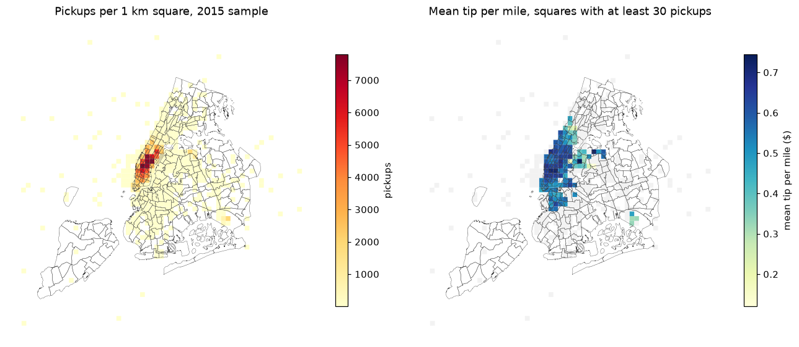
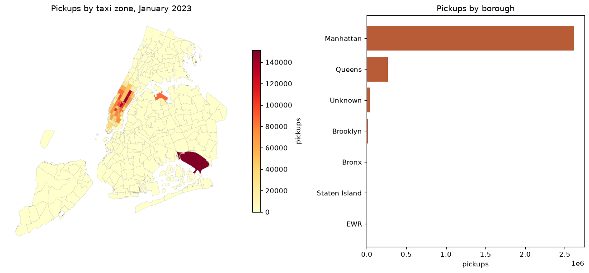
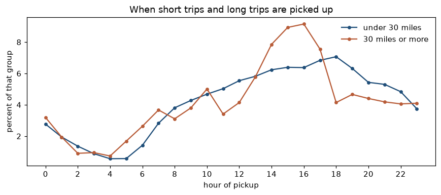

Yellow taxis record a pickup, a drop-off, a time, and a distance. Two published walkthroughs turn that record into maps and tables. Esri’s ArcGIS API for Python sample bins pickup points into 1 km squares and maps the aggregates (Analyzing New York City taxi data). Chih-Ling Hsu’s 2018 walkthrough asks which zones are busiest, when the peaks fall, and how trips under 30 miles differ from longer ones (Analyze the NYC Taxi Data). This notebook answers the same questions in spatial SQL with geolattice.geolatticedb.
The trips are Parquet files already in this module. DuckDB, through geolattice.geolatticedb, reads them in place. The zone polygons are the TLC taxi zone shapefile, loaded once into DuckDB for the map.
Learning objectives
Bin pickup points into 1 km squares in a projected CRS and map the counts.
Rank taxi zones and boroughs by pickups and drop-offs.
Read the peak hour and the quiet hour from the pickup timestamp.
Compare trips under 30 miles with longer trips: hour, route, rate code, and payment.
Data
Data
Source
Use
January 2023 yellow taxi trips (yellow_taxi_2023-01_clean.parquet, 2,940,393 rows)
2015 pickup coordinates (nyc-taxi-tiny, one file per month)
NYC TLC, module sample
The 1 km squares
The 2015 sample still stores pickup_longitude and pickup_latitude. The January 2023 file stores PULocationID and DOLocationID. Esri’s sample used the full January and February 2015 yellow files. Hsu used the first half of 2017. The numbers below belong to these extracts.
Contents
Setup
One kilometre squares
Zones and boroughs
Peak hours
Short trips and long trips
Summary and exercises
Setup
Installation. This notebook needs installation option 6 (every GeoLattice module): pip install "geolattice[all]". See “Installation options” in the GeoLattice README. The spatial work runs in DuckDB through geolattice.geolatticedb, so no PostGIS server is required for these cells.
import zipfile # unpack the TLC zone shapefileimport urllib.request # download the shapefile oncefrom pathlib import Path # file paths# The GeoLattice repository root: the first folder above this notebook that holds Data/ and Tutorials/HERE = Path.cwd() # folder of this notebookROOT =next(p for p in [HERE, *HERE.parents] if (p /"Data").is_dir() and (p /"Tutorials").is_dir())DATA = ROOT /"Data"/"06_spatialDB"# data folder of this moduleTRIPS = DATA /"yellow_taxi_2023-01_clean.parquet"# cleaned January 2023 yellow tripsZLOOKUP = DATA /"taxi_zone_lookup.parquet"# LocationID, borough, zone nameTINY = DATA /"nyc-taxi-tiny"/"year=2015"/"month=*"/"part-0.parquet"# 2015 sample, with coordinatesdef taxi_zone_shp(): # TLC taxi zone polygons"""Return the TLC taxi zone shapefile, downloading it once if it is missing.""" folder = DATA /"taxi_zones"# local cache found =sorted(folder.rglob("taxi_zones.shp")) # already extracted, any nestingif found: # nothing to downloadreturn found[0] folder.mkdir(parents=True, exist_ok=True) # create the cache folder zip_path = folder /"taxi_zones.zip"# the TLC archive url ="https://d37ci6vzurychx.cloudfront.net/misc/taxi_zones.zip"# official TLC zonesprint("Downloading taxi zone shapefile ...") # progress urllib.request.urlretrieve(url, zip_path) # copy the archivewith zipfile.ZipFile(zip_path) as zf: # open it zf.extractall(folder) # shapefile, index, and projection found =sorted(folder.rglob("taxi_zones.shp")) # the extracted layerifnot found: # the archive layout changedraiseFileNotFoundError(f"taxi_zones.shp not found after extracting {url}")return found[0]ZONES = taxi_zone_shp() # path used by pdb.loadprint("Repository:", ROOT) # where the data are read fromprint("Zone shapefile:", ZONES.name) # the layer that was found
Repository: /home/zia207/Github/GeoLattice
Zone shapefile: taxi_zones.shp
One kilometre squares
Esri’s sample calls aggregate_points and asks for 1 km squares. The processing CRS has to be projected: a degree of longitude is not a kilometre. Their sample uses Web Mercator. The query below uses NAD83 / New York Long Island, EPSG:32118, where the unit is the metre, so a bin of 1,000 is a 1 km square on that projection.
DuckDB spatial has ST_Point, ST_Transform, and ST_MakeEnvelope. It has no ST_SquareGrid. floor(ST_X(g) / 1000) is the column of the square, and ST_MakeEnvelope builds the polygon. In PostGIS the same grid is one function, which notebook 06_03_04 used on the county layer:
SELECT g.i, g.j, count(*) AS pickupsFROM pickups AS pJOIN ST_SquareGrid(1000, ST_Transform(ST_MakeEnvelope(-74.3, 40.4, -73.6, 41.0, 4326), 32118)) AS gON ST_Intersects(ST_Transform(p.geom, 32118), g.geom)GROUPBY g.i, g.j
The points are the 2015 sample. A bounding box drops coordinates that fall outside the city, including the bad GPS values TLC files contain. Esri symbolized each square by its maximum tip divided by its maximum trip distance. The second map uses the mean tip divided by the mean distance, and only in squares with at least 30 pickups, so one large tip does not paint the cell.
Code
db = pdb.connect("duckdb") # DuckDB with the spatial extension, through geolatticedbdb.load(ZONES, "taxi_zones", srid=4326) # TLC zone polygons, stored as WGS84zones = db.query("SELECT LocationID, zone, borough, geom FROM taxi_zones") # polygons for the mapsn_trips = db.query( # January 2023 yellow tripsf"SELECT count(*) AS n FROM read_parquet('{TRIPS.as_posix()}')").n.iloc[0]n_pts = db.query(f""" SELECT count(*) AS n FROM read_parquet('{TINY.as_posix()}') WHERE pickup_longitude BETWEEN -74.3 AND -73.6 AND pickup_latitude BETWEEN 40.4 AND 41.0""").n.iloc[0] # 2015 pickups inside the city boxprint(f"{n_trips:,.0f} yellow trips in January 2023")print(f"{n_pts:,.0f} pickups with coordinates inside the city box, 2015 sample")print(f"{len(zones):,} taxi zones")
2,940,393 yellow trips in January 2023
143,744 pickups with coordinates inside the city box, 2015 sample
263 taxi zones
Code
# 1 km squares. ix and iy are the column and row on EPSG:32118.squares = db.query(f"""WITH pts AS ( SELECT ST_Transform( ST_Point(pickup_longitude, pickup_latitude), 'EPSG:4326', 'EPSG:32118', always_xy := true ) AS g, -- pickup, in metres tip_amount, trip_distance FROM read_parquet('{TINY.as_posix()}') WHERE pickup_longitude BETWEEN -74.3 AND -73.6 -- city box, west to east AND pickup_latitude BETWEEN 40.4 AND 41.0 -- city box, south to north),binned AS ( SELECT floor(ST_X(g) / 1000)::INTEGER AS ix, -- 1 km column floor(ST_Y(g) / 1000)::INTEGER AS iy, -- 1 km row count(*) AS pickups, avg(tip_amount) AS mean_tip, avg(trip_distance) AS mean_miles FROM pts GROUP BY ix, iy)SELECT pickups, mean_tip, mean_miles, mean_tip / nullif(mean_miles, 0) AS tip_per_mile, -- mean tip per mean mile ST_Transform( ST_MakeEnvelope(ix * 1000, iy * 1000, (ix + 1) * 1000, (iy + 1) * 1000), 'EPSG:32118', 'EPSG:4326', always_xy := true ) AS geom -- the square, for the mapFROM binned""")print(f"{len(squares):,} squares, busiest square {int(squares.pickups.max()):,} pickups")
403 squares, busiest square 7,796 pickups
Code
mapped = squares.copy() # a copy, so the filter below does not change the tablemapped.loc[mapped.pickups <30, "tip_per_mile"] =None# thin squares stay blank on the tip mapfig, axes = plt.subplots(1, 2, figsize=(12, 5.6)) # count, then tip per milesquares.plot( # every square that had a pickup"pickups", ax=axes[0], cmap="YlOrRd", legend=True, legend_kwds={"label": "pickups", "shrink": 0.7},)zones.boundary.plot(ax=axes[0], color="0.25", linewidth=0.25) # zone outlinesaxes[0].set_axis_off()axes[0].set_title("Pickups per 1 km square, 2015 sample")mapped.plot( # tip per mile where the square has enough trips"tip_per_mile", ax=axes[1], cmap="YlGnBu", legend=True, missing_kwds={"color": "#f2f2f2"}, legend_kwds={"label": "mean tip per mile ($)", "shrink": 0.7},)zones.boundary.plot(ax=axes[1], color="0.25", linewidth=0.25) # same outlinesaxes[1].set_axis_off()axes[1].set_title("Mean tip per mile, squares with at least 30 pickups")fig.tight_layout()

The 2015 sample puts 143,744 pickups into 403 squares. The busiest square has 7,795 pickups and sits in Midtown, near Herald Square and Penn Station (about 40.75 N, 73.99 W). The dense squares follow Manhattan south of Central Park. Mean tip per mile is highest in that same Midtown core, where a short trip still carries a tip of a dollar or two. Squares toward the airports sit lower on this scale, because the distance in the denominator is much longer.
Zones and boroughs
Hsu ranked zones by pickups and by drop-offs, then totaled the boroughs. January 2023 joins PULocationID and DOLocationID to taxi_zone_lookup.parquet. TLC zones 264 and 265 are stored with borough Unknown (the zone name is NV or blank) when the zone was not recorded. Those rows stay out of the ranking. The choropleth uses the TLC polygons, so a zone id that has no polygon does not appear on the map.
Code
top_pu = db.query(f"""SELECT z.Zone AS zone, z.Borough AS borough, count(*) AS pickupsFROM read_parquet('{TRIPS.as_posix()}') AS tJOIN read_parquet('{ZLOOKUP.as_posix()}') AS z ON z.LocationID = t.PULocationIDWHERE z.Borough <> 'Unknown' -- drop TLC zones 264 and 265GROUP BY z.Zone, z.BoroughORDER BY pickups DESCLIMIT 8""")top_do = db.query(f"""SELECT z.Zone AS zone, z.Borough AS borough, count(*) AS dropoffsFROM read_parquet('{TRIPS.as_posix()}') AS tJOIN read_parquet('{ZLOOKUP.as_posix()}') AS z ON z.LocationID = t.DOLocationIDWHERE z.Borough <> 'Unknown'GROUP BY z.Zone, z.BoroughORDER BY dropoffs DESCLIMIT 8""")boroughs = db.query(f"""SELECT z.Borough AS borough, count(*) AS pickupsFROM read_parquet('{TRIPS.as_posix()}') AS tJOIN read_parquet('{ZLOOKUP.as_posix()}') AS z ON z.LocationID = t.PULocationIDGROUP BY z.BoroughORDER BY pickups DESC""")print("Most pickups")print(top_pu.to_string(index=False))print()print("Most drop-offs")print(top_do.to_string(index=False))print()print("Pickups by borough")print(boroughs.to_string(index=False))
Most pickups
zone borough pickups
JFK Airport Queens 151267
Upper East Side South Manhattan 143163
Upper East Side North Manhattan 133674
Midtown Center Manhattan 130669
Penn Station/Madison Sq West Manhattan 105535
Midtown East Manhattan 101854
Lincoln Square East Manhattan 96724
Times Sq/Theatre District Manhattan 95348
Most drop-offs
zone borough dropoffs
Upper East Side North Manhattan 141773
Upper East Side South Manhattan 128115
Midtown Center Manhattan 112017
Times Sq/Theatre District Manhattan 86419
Murray Hill Manhattan 85752
Upper West Side South Manhattan 85184
Lincoln Square East Manhattan 85073
Lenox Hill West Manhattan 84745
Pickups by borough
borough pickups
Manhattan 2616013
Queens 267638
Unknown 37813
Brooklyn 15627
Bronx 3055
Staten Island 217
EWR 30
Code
pu = db.query(f"""SELECT PULocationID AS LocationID, count(*) AS pickupsFROM read_parquet('{TRIPS.as_posix()}')GROUP BY PULocationID""") # one count per zone idzmap = zones.merge(pu, on="LocationID", how="left") # counts onto the polygonszmap["pickups"] = zmap["pickups"].fillna(0) # a zone with no January pickupfig, axes = plt.subplots(1, 2, figsize=(12, 5.6), gridspec_kw={"width_ratios": [1.35, 1]})zmap.plot( # January 2023 pickups"pickups", ax=axes[0], cmap="YlOrRd", legend=True, edgecolor="0.6", linewidth=0.15, legend_kwds={"label": "pickups", "shrink": 0.7},)axes[0].set_axis_off()axes[0].set_title("Pickups by taxi zone, January 2023")order = boroughs.sort_values("pickups") # smallest borough at the bottomaxes[1].barh(order.borough, order.pickups, color="#b85c38") # one bar per boroughaxes[1].set_xlabel("pickups")axes[1].set_title("Pickups by borough")fig.tight_layout()

JFK Airport is the busiest pickup zone in this month (151,267 trips), then Upper East Side South, Upper East Side North, and Midtown Center. Drop-offs concentrate on the Upper East Side and Midtown. Manhattan has 2,616,013 pickups. Staten Island has 217. Hsu’s first half of 2017 put Upper East Side South first, with JFK first among zones outside Manhattan. One January is enough to put the airport at the top of the pickup list.
Peak hours
The pickup timestamp is a column, so the daily pattern is hour(tpep_pickup_datetime) and a count. Hsu’s first half of 2017 peaked around 18:00-19:00 and was quietest around 05:00.
Code
hours = db.query(f"""SELECT hour(tpep_pickup_datetime) AS hour, count(*) AS tripsFROM read_parquet('{TRIPS.as_posix()}')GROUP BY hourORDER BY hour""") # 24 rows, one per hour of the dayfig, ax = plt.subplots(figsize=(8, 3.6))ax.plot(hours.hour, hours.trips, color="#1f4e79", marker="o", markersize=3.5) # trips by hourax.set_xticks(range(0, 24, 2)) # labels every two hoursax.set_xlabel("hour of pickup")ax.set_ylabel("trips")ax.set_title("Yellow taxi pickups by hour, January 2023")fig.tight_layout()peak = hours.loc[hours.trips.idxmax()] # the busiest hourquiet = hours.loc[hours.trips.idxmin()] # the quietest hourprint(f"Busiest hour: {int(peak.hour):02d}:00, {int(peak.trips):,} trips")print(f"Quietest hour: {int(quiet.hour):02d}:00, {int(quiet.trips):,} trips")
January 2023 is busiest at 18:00 (207,726 trips) and quietest at 04:00 (16,506). The evening peak matches Hsu’s longer series. The quiet hour sits one hour earlier than the 05:00 she reported for 2017.
Short trips and long trips
Hsu split trips at 30 miles, about the distance across the city. The same cut is used here. Trips with trip_distance of 0 are left out of the split. The rate codes follow the TLC data dictionary: 1 standard, 2 JFK, 3 Newark, 4 Nassau or Westchester, 5 negotiated. Payment type 1 is a credit card and 2 is cash.
Code
split = db.query(f"""SELECT count(*) FILTER (WHERE trip_distance > 0 AND trip_distance < 30) AS short_trips, count(*) FILTER (WHERE trip_distance >= 30) AS long_trips, quantile_cont(trip_distance, 0.5) FILTER (WHERE trip_distance > 0) AS median_milesFROM read_parquet('{TRIPS.as_posix()}')""")by_hour = db.query(f"""SELECT hour(tpep_pickup_datetime) AS hour, count(*) FILTER (WHERE trip_distance > 0 AND trip_distance < 30) AS short_trips, count(*) FILTER (WHERE trip_distance >= 30) AS long_tripsFROM read_parquet('{TRIPS.as_posix()}')GROUP BY hourORDER BY hour""")rates = db.query(f"""SELECT CASE CAST(RatecodeID AS INTEGER) WHEN 1 THEN 'standard' WHEN 2 THEN 'JFK' WHEN 3 THEN 'Newark' WHEN 4 THEN 'Nassau or Westchester' WHEN 5 THEN 'negotiated' ELSE 'other' END AS rate, count(*) FILTER (WHERE trip_distance > 0 AND trip_distance < 30) AS short_trips, count(*) FILTER (WHERE trip_distance >= 30) AS long_tripsFROM read_parquet('{TRIPS.as_posix()}')GROUP BY rateORDER BY short_trips DESC""")pays = db.query(f"""SELECT CASE payment_type WHEN 1 THEN 'credit card' WHEN 2 THEN 'cash' WHEN 3 THEN 'no charge' WHEN 4 THEN 'dispute' ELSE 'other' END AS payment, count(*) FILTER (WHERE trip_distance > 0 AND trip_distance < 30) AS short_trips, count(*) FILTER (WHERE trip_distance >= 30) AS long_tripsFROM read_parquet('{TRIPS.as_posix()}')GROUP BY paymentORDER BY short_trips DESC""")def shares(frame, key): # percent of each group, so the small long-trip set is readable out = frame.copy() out["short_pct"] = (100* out.short_trips / out.short_trips.sum()).round(1) out["long_pct"] = (100* out.long_trips / out.long_trips.sum()).round(1)return out[[key, "short_trips", "short_pct", "long_trips", "long_pct"]]print(f"Short trips: {int(split.short_trips.iloc[0]):,}. "f"Long trips: {int(split.long_trips.iloc[0]):,}. "f"Median distance: {split.median_miles.iloc[0]:.2f} miles.")print()print("Rate code")print(shares(rates, "rate").to_string(index=False))print()print("Payment")print(shares(pays, "payment").to_string(index=False))
short_routes = db.query(f"""SELECT pz.Zone AS pickup, dz.Zone AS dropoff, count(*) AS tripsFROM read_parquet('{TRIPS.as_posix()}') AS tJOIN read_parquet('{ZLOOKUP.as_posix()}') AS pz ON pz.LocationID = t.PULocationIDJOIN read_parquet('{ZLOOKUP.as_posix()}') AS dz ON dz.LocationID = t.DOLocationIDWHERE t.trip_distance > 0 AND t.trip_distance < 30 AND pz.Borough <> 'Unknown' AND dz.Borough <> 'Unknown'GROUP BY pickup, dropoffORDER BY trips DESCLIMIT 5""")long_routes = db.query(f"""SELECT CASE WHEN pz.Borough = 'Unknown' THEN 'Unknown zone' ELSE pz.Zone END AS pickup, CASE WHEN dz.Borough = 'Unknown' THEN 'Unknown zone' ELSE dz.Zone END AS dropoff, count(*) AS tripsFROM read_parquet('{TRIPS.as_posix()}') AS tJOIN read_parquet('{ZLOOKUP.as_posix()}') AS pz ON pz.LocationID = t.PULocationIDJOIN read_parquet('{ZLOOKUP.as_posix()}') AS dz ON dz.LocationID = t.DOLocationIDWHERE t.trip_distance >= 30GROUP BY pickup, dropoffORDER BY trips DESCLIMIT 5""")print("Busiest short routes")print(short_routes.to_string(index=False))print()print("Busiest long routes")print(long_routes.to_string(index=False))
Busiest short routes
pickup dropoff trips
Upper East Side South Upper East Side North 21669
Upper East Side North Upper East Side South 18442
Upper East Side North Upper East Side North 13925
Upper East Side South Upper East Side South 13599
Upper East Side South Midtown Center 9118
Busiest long routes
pickup dropoff trips
JFK Airport Unknown zone 1014
JFK Airport Newark Airport 374
LaGuardia Airport Unknown zone 178
Unknown zone Unknown zone 56
LaGuardia Airport Newark Airport 37
Code
fig, ax = plt.subplots(figsize=(8, 3.6))# Share of each group, so 2,317 long trips can be read against 2.9 million short ones.ax.plot(by_hour.hour, 100* by_hour.short_trips / by_hour.short_trips.sum(), color="#1f4e79", marker="o", markersize=3.5, label="under 30 miles")ax.plot(by_hour.hour, 100* by_hour.long_trips / by_hour.long_trips.sum(), color="#b85c38", marker="o", markersize=3.5, label="30 miles or more")ax.set_xticks(range(0, 24, 2))ax.set_xlabel("hour of pickup")ax.set_ylabel("percent of that group")ax.set_title("When short trips and long trips are picked up")ax.legend(frameon=False)fig.tight_layout()print("Long trips peak at "f"{int(by_hour.loc[by_hour.long_trips.idxmax(), 'hour']):02d}:00")
Long trips peak at 16:00

Almost every January trip is under 30 miles: 2,938,076 short trips against 2,317 long ones, and the median distance is 1.81 miles. The busiest short route is Upper East Side South to Upper East Side North. The busiest long route is JFK Airport to an unrecorded drop-off zone, then JFK Airport to Newark Airport. Long trips peak at 16:00, in the afternoon, while short trips follow the 18:00 citywide peak.
The rate codes separate the two groups more clearly than the payment type does. About 96% of short trips use the standard rate. About 17% of long trips do. The rest of the long trips are JFK, Newark, Nassau or Westchester, or a negotiated fare. Both groups pay mostly by credit card (about 80% of short trips and about 75% of long trips). Hsu’s 2017 tables showed the same airport pattern for long trips, with a credit-card share slightly higher on the long trips than on the short ones.
Summary and exercises
Main points
A 1 km square grid is a GROUP BY on coordinates projected to metres. PostGIS writes the same grid with ST_SquareGrid.
The January 2023 zone id joins to the TLC zone table. The polygons turn that count into a map. JFK Airport leads pickups in this month, and Manhattan dominates the boroughs.
hour(tpep_pickup_datetime) is enough for the daily cycle: 18:00 is the peak and 04:00 is the trough.
A 30 mile cut leaves a few thousand long trips. They run between airports in the afternoon, and they use the special rate codes.
Repeat the borough table for drop-offs. Which borough gains the most trips between pickup and drop-off?
Rebuild the squares at 500 m (floor(ST_X(g) / 500)). Does the busiest cell stay in Midtown?
Move the long-trip cut from 30 miles to 10 miles and list the new top origin-destination pair.
Esri’s sample symbolized each square by maximum tip divided by maximum distance. Add those two aggregates to the square query and compare that map with the mean tip per mile.